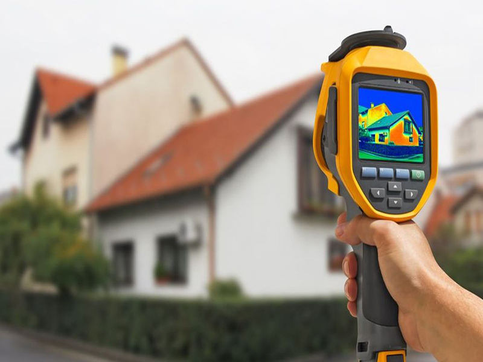

Energía
Demanda, eficiencia, sistemas y oportunidades de mejora.
Revisamos el proyecto o edificio para identificar oportunidades, riesgos y evidencias necesarias en materia de energía, confort, materiales, agua y gestión.
Una evaluación ayuda a priorizar acciones y documentar decisiones. Cuando existe un objetivo de certificación, primero definimos el esquema, versión, alcance y etapa para establecer una ruta realista.
Las categorías aplicables dependen del tipo de evaluación o certificación.
Demanda, eficiencia, sistemas y oportunidades de mejora.
Condiciones térmicas, iluminación, ventilación y experiencia interior.
Consumo, equipos, gestión y estrategias aplicables.
Selección, durabilidad, información ambiental y residuos.
Relación con el entorno, accesibilidad y condicionantes.
Responsables, registros, requisitos y trazabilidad documental.
No todos los proyectos necesitan el mismo nivel de análisis. Definimos primero para qué se evaluará y cómo se utilizarán los resultados.

Definimos edificio, etapa, estándar, versión y resultado esperado.
Reunimos planos, memorias, datos, registros y responsables.
Comparamos el estado actual con criterios aplicables.
Priorizamos acciones, responsables, tiempos y evidencias.
Revisamos avances y coordinamos aclaraciones.
Organizamos evidencia para revisión interna o entrega correspondiente.
Estado inicial, riesgos y oportunidades.
Criterios, responsables y evidencia requerida.
Acciones priorizadas por etapa y viabilidad.
Organización documental dentro del alcance acordado.
La contratación del acompañamiento no garantiza la obtención de una certificación. La decisión final corresponde al organismo evaluador y depende del cumplimiento, evidencia, auditorías, tarifas y requisitos vigentes.
Cuéntanos el tipo de inmueble, su ubicación, etapa y objetivo.
Solicitar diagnóstico inicial Escribir por WhatsApp